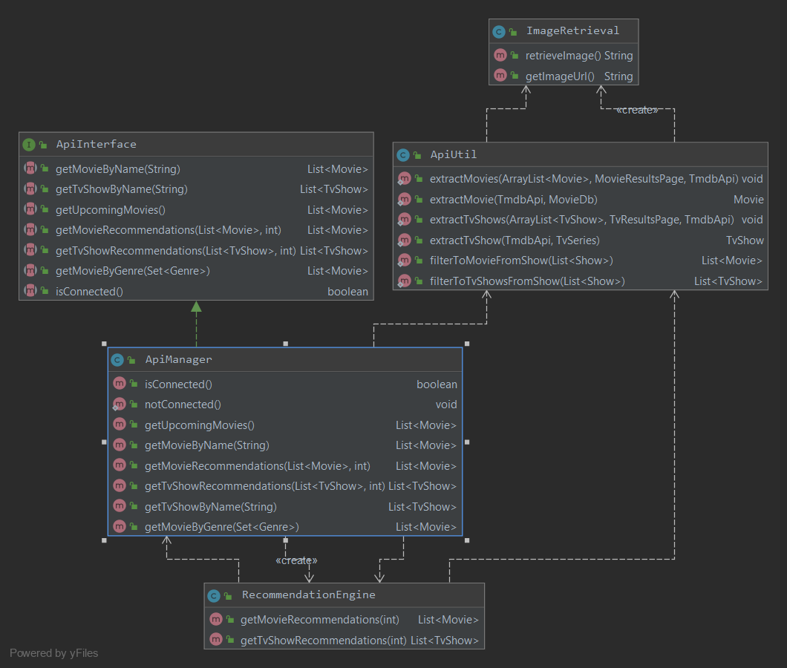

By: Team CS2103T-F13-4 Since: Sept 2019 Licence: MIT
1. Setting up
Refer to the guide here.
2. Design
2.1. Architecture

The Architecture Diagram given above explains the high-level design of the App. Given below is a quick overview of each component.
The .puml files used to create diagrams in this document can be found in the diagrams folder.
Refer to the Using PlantUML guide to learn how to create and edit diagrams.
|
-
At app launch: Initializes the components in the correct sequence, and connects them up with each other.
-
At shut down: Shuts down the components and invokes cleanup method where necessary.
Commons represents a collection of classes used by multiple other components.
The following class plays an important role at the architecture level:
-
LogsCenter: Used by many classes to write log messages to the App’s log file.
The rest of the App consists of four components.
Each of the five components
-
Defines its API in an
interfacewith the same name as the Component. -
Exposes its functionality using a
{Component Name}Managerclass.
For example, the Logic component (see the class diagram given below) defines it’s API in the Logic.java interface and exposes its functionality using the LogicManager.java class.
How the architecture components interact with each other
The Sequence Diagram below shows how the components interact with each other for the scenario where the user issues the command delete 1.
delete 1 commandThe sections below give more details of each component.
2.2. UI component
API : Ui.java
The UI consists of a MainWindow that is made up of parts e.g.CommandBox, ResultDisplay, ShowListPanel, StatusBarFooter etc. All these, including the MainWindow, inherit from the abstract UiPart class.
The UI component uses JavaFx UI framework. The layout of these UI parts are defined in matching .fxml files that are in the src/main/resources/view folder. For example, the layout of the MainWindow is specified in MainWindow.fxml
The UI component,
-
Executes user commands using the
Logiccomponent. -
Listens for changes to
Modeldata so that the UI can be updated with the modified data.
2.3. Logic component
API :
Logic.java
-
Logicuses theWatchListParserclass to parse the user command. -
This results in a
Commandobject which is executed by theLogicManager. -
The command execution can affect the
Model(e.g. adding a show). -
The result of the command execution is encapsulated as a
CommandResultobject which is passed back to theUi. -
In addition, the
CommandResultobject can also instruct theUito perform certain actions, such as displaying help to the user.
Given below is the Sequence Diagram for interactions within the Logic component for the execute("delete 1") API call.
delete 1 Command
The lifeline for DeleteCommandParser should end at the destroy marker (X) but due to a limitation of PlantUML, the lifeline reaches the end of diagram.
|
2.4. Model component
API : Model.java
The Model,
-
stores a
UserPrefobject that represents the user’s preferences. -
stores the Ezwatchlist data.
-
exposes an unmodifiable
ObservableList<Show>that can be 'observed' e.g. the UI can be bound to this list so that the UI automatically updates when the data in the list change. -
does not depend on any of the other three components.
As a more OOP model, we can store a Actor list in Watch List, which Show can reference. This would allow Watch List to only require one Actor object per unique Actor, instead of each Show needing their own Actor object. An example of how such a model may look like is given below. |
2.5. Storage component
API : Storage.java
The Storage component,
-
can save
UserPrefobjects in json format and read it back. -
can save the Watch list data in json format and read it back.
2.6. Common classes
Classes used by multiple components are in the seedu.addressbook.commons package.
3. Implementation
This section describes some noteworthy details on how certain features are implemented.
3.1. [Feature] Mark/unmark as watched feature
The watch feature allows users to mark or unmark shows as watched. It also allows users to keep track of the latest episode of a TV series that they have watched.
3.1.1. Implementation
The mark/unmark as watched mechanism is facilitated by WatchCommand which can be found under the commands package.
It extends Command and uses the WatchCommandParser to process the command entered by the user.
Given below is an example usage scenario and how the mark/unmark as watched mechanism works at each step.
Step 1. The user launches the application, and executes watch 1 s/2 e/3 command to update the latest watched episode of the first show in the list.
Step 2. Entering the command calls WatchListParser#parseCommand(), which in turn returns a new WatchCommandParser and the WatchCommandParser#parse() command is called.
Step 3. A new WatchCommand is created, with the index of the show being parsed as a field of the WatchCommand. A new WatchShowDescriptor is also created to relay the episode number and season number to the WatchCommand object.
Step 4. The WatchCommand#execute() method is called, referencing the current model, and the show that is in the current FilteredShowList is referenced based off the current model.
If the index is out of bounds, a new CommandException is thrown.
|
Step 5. A copy of the show is created through the use of WatchCommand#createEditedShow(), with the new total number of seasons and episodes updated if there are any changes.
A new isWatched value of the show is also determined based on the number of episodes that are watched.
The following activity diagram below summarizes the calculation of the number of episodes watched:

Step 6. The show in the current show list is updated to the newly created copy with the updated watched status and latest episode watched, and a CommandResult with the new watched status of the show is created.
The following sequence diagram shows how the watch operation works:

3.1.2. Design Considerations
Aspect: Creating a new WatchCommand instead of an altered EditCommand
-
Alternative 1 (current choice): Creating a new
WatchCommandclass for changing the 'watch' status of a show.-
Pros: Enables for greater cohesion since there is a specific command for editing the 'watch' status of a show.
-
Cons: Requires longer code, and the code is also repetitive since its implementation is similar to that of the
EditCommand.
-
-
Alternative 2: Use the
WatchCommandParserto create a newEditCommandobject that edits the watch status of the show.-
Pros: Less code repetition and shorter code in general.
-
Cons: This will mean that there is less cohesion of the code and greater dependencies since more classes depend on the
EditCommandclass.
-
3.2. [Proposed] Statistics feature
3.2.1. Proposed Implementation
The statistics feature is facilitated by Statistics object. It extends Ezwatchlist with a summary of the users' personal
preferences and footprint including the most watched genre, shows that you might have forgotten to watch, and the
recommendations generated for you. It is stored internally as an Statistics object containing a ModelManager.
Additionally, it implements the following operations:
-
Statistics#getFavouriteGenre()— Gives the genre that appears the most number of times in the list of watched shows. -
Statistics#getForgotten()— Gives the 3 shows that were added the earliest but have not been watched. -
Statistics#getRecommendation()— Gives 3 recommendations according to the watched shows.
Given below is a usage scenario of a user checking his/her statistics page.
Step 1. The user launches the application. The Statistics object will be initialized with ModelManager containing the current watchlist and watched list. Behind the scenes, the 3 statistics will be calculated and the statistics panel will be populated with the result.
Step 2. The user clicks on the statistic button and sees the content.
This is the sequence diagram of getFavouriteGenre().
This is the sequence diagram of getForgotten().
This is the sequence diagram of getRecommendation().
The following activity diagram summarizes the workflow of Statistics:
3.2.2. Design Considerations
Aspect: How Statistics stores the watchlist and watched list
-
Alternative 1 (current choice): Saves the whole ModelManager as a field.
-
Pros: Easy to implement and make use of.
-
Cons: More dependency on ModelManager.
-
-
Alternative 2: Saves the watchlist and watched list as fields respectively.
-
Pros: Less dependency on ModelManager.
-
Cons: Less potential functionality and the lists might not be up-to-date.
-
Aspect: When the results are calculated
-
Alternative 1 (current choice): Calculate when the application starts and update when there are changes.
-
Pros: It appears more responsive in terms of navigating around the application.
-
Cons: Need to constantly recalculate and update the results.
-
-
Alternative 2: Calculate when the user navigate to Statistics panel.
-
Pros: Less calculation needed.
-
Cons: Appear less responsive.
-
3.3. [Proposed] Undo/Redo feature
3.3.1. Proposed Implementation
The undo/redo mechanism is facilitated by VersionedAddressBook.
It extends AddressBook with an undo/redo history, stored internally as an addressBookStateList and currentStatePointer.
Additionally, it implements the following operations:
-
VersionedAddressBook#commit()— Saves the current address book state in its history. -
VersionedAddressBook#undo()— Restores the previous address book state from its history. -
VersionedAddressBook#redo()— Restores a previously undone address book state from its history.
These operations are exposed in the Model interface as Model#commitAddressBook(), Model#undoAddressBook() and Model#redoAddressBook() respectively.
Given below is an example usage scenario and how the undo/redo mechanism behaves at each step.
Step 1. The user launches the application for the first time. The VersionedAddressBook will be initialized with the initial address book state, and the currentStatePointer pointing to that single address book state.

Step 2. The user executes delete 5 command to delete the 5th person in the address book. The delete command calls Model#commitAddressBook(), causing the modified state of the address book after the delete 5 command executes to be saved in the addressBookStateList, and the currentStatePointer is shifted to the newly inserted address book state.

Step 3. The user executes add n/David … to add a new person. The add command also calls Model#commitAddressBook(), causing another modified address book state to be saved into the addressBookStateList.
If a command fails its execution, it will not call Model#commitAddressBook(), so the address book state will not be saved into the addressBookStateList.
|
Step 4. The user now decides that adding the person was a mistake, and decides to undo that action by executing the undo command. The undo command will call Model#undoAddressBook(), which will shift the currentStatePointer once to the left, pointing it to the previous address book state, and restores the address book to that state.
If the currentStatePointer is at index 0, pointing to the initial address book state, then there are no previous address book states to restore. The undo command uses Model#canUndoAddressBook() to check if this is the case. If so, it will return an error to the user rather than attempting to perform the undo.
|
The following sequence diagram shows how the undo operation works:
The lifeline for UndoCommand should end at the destroy marker (X) but due to a limitation of PlantUML, the lifeline reaches the end of diagram.
|
The redo command does the opposite — it calls Model#redoAddressBook(), which shifts the currentStatePointer once to the right, pointing to the previously undone state, and restores the address book to that state.
If the currentStatePointer is at index addressBookStateList.size() - 1, pointing to the latest address book state, then there are no undone address book states to restore. The redo command uses Model#canRedoAddressBook() to check if this is the case. If so, it will return an error to the user rather than attempting to perform the redo.
|
Step 5. The user then decides to execute the command list. Commands that do not modify the address book, such as list, will usually not call Model#commitAddressBook(), Model#undoAddressBook() or Model#redoAddressBook(). Thus, the addressBookStateList remains unchanged.

Step 6. The user executes clear, which calls Model#commitAddressBook(). Since the currentStatePointer is not pointing at the end of the addressBookStateList, all address book states after the currentStatePointer will be purged. We designed it this way because it no longer makes sense to redo the add n/David … command. This is the behavior that most modern desktop applications follow.

The following activity diagram summarizes what happens when a user executes a new command:

3.3.2. Design Considerations
Aspect: How undo & redo executes
-
Alternative 1 (current choice): Saves the entire address book.
-
Pros: Easy to implement.
-
Cons: May have performance issues in terms of memory usage.
-
-
Alternative 2: Individual command knows how to undo/redo by itself.
-
Pros: Will use less memory (e.g. for
delete, just save the person being deleted). -
Cons: We must ensure that the implementation of each individual command are correct.
-
Aspect: Data structure to support the undo/redo commands
-
Alternative 1 (current choice): Use a list to store the history of address book states.
-
Pros: Easy for new Computer Science student undergraduates to understand, who are likely to be the new incoming developers of our project.
-
Cons: Logic is duplicated twice. For example, when a new command is executed, we must remember to update both
HistoryManagerandVersionedAddressBook.
-
-
Alternative 2: Use
HistoryManagerfor undo/redo-
Pros: We do not need to maintain a separate list, and just reuse what is already in the codebase.
-
Cons: Requires dealing with commands that have already been undone: We must remember to skip these commands. Violates Single Responsibility Principle and Separation of Concerns as
HistoryManagernow needs to do two different things.
-
3.4. [Proposed] Data Encryption
{Explain here how the data encryption feature will be implemented}
3.5. Logging
We are using java.util.logging package for logging. The LogsCenter class is used to manage the logging levels and logging destinations.
-
The logging level can be controlled using the
logLevelsetting in the configuration file (See Section 3.7, “Configuration”) -
The
Loggerfor a class can be obtained usingLogsCenter.getLogger(Class)which will log messages according to the specified logging level -
Currently log messages are output through:
Consoleand to a.logfile.
Logging Levels
-
SEVERE: Critical problem detected which may possibly cause the termination of the application -
WARNING: Can continue, but with caution -
INFO: Information showing the noteworthy actions by the App -
FINE: Details that is not usually noteworthy but may be useful in debugging e.g. print the actual list instead of just its size
3.6. Online Data
We are using The Movie Database (TMDB) to retrieve information on movies and tv shows.
3.6.1. Implementation
All interactions with the third party library are facilitated by the interface ApiInterface. Methods in ApiInterface are the main
way the application retrieves any online information from the database.
Methods in ApiInterface
-
getMovieByName: The method will return a list of movies in the database based on the name of the movie given -
getTvShowByName: The method will return a list of tv shows in the database based on the name of the tv show given -
isConnected: Checks if the application is connected online to the database
ApiManager is an implementation of ApiInterface and is done by using a java wrapper for the TMDB api implemented by Holger Brandl.
Allowing us to retrieve information in the java code.
Given below is an example of how the application might want to retrieve movie information through ApiInterface.
Step 1. First an instance of a class implementing ApiInterface has to be created for the methods to be called. When ApiManager is instantiated the class api
key’s is used to create a call to the TMDB API. All information retrieved must go through the class’s api call.
Step 2. The method getMovieByName("Name Of Movie") is called and the api call searches the for the movie in the database with the name given.
A list of wrapped movies is given back, which is then read and used to create new instances of our application’s Show model with information wrapped in classes such as
Name, Description, and Actor.
Step 3. To retrieve an image from the database, an image url is downloaded to the computer. The class ImageRetrieval does this. An
ImageRetrieval instance is created by the method for each image, and is downloaded to a root folder determined by ImageRetrieval#defaultDirectory().
Step 4. A poster class is then created with the image path, to be used to load images in the application.
Step 5. With the list of movies returned, the application is given access to online information in a readable format.
At any point the application might fail due to the application not being connected to the internet. If that occurs a
OnlineConnectionException is thrown for the application to handle.
|
The relationship between all the classes are shown in the following class diagram: 
3.6.2. Design Considerations
Why this implementation was chosen
-
All API interactions would be in the API package and go through ApiInterface.
-
Pros:
-
The application wouldn’t have to seek access to the database on their own. The interface should provide all the functionality needed.
-
Follows the Single Responsibility Principle (SRP) that a module in the program should be encapsulated and have one repsponsibility.
-
-
3.6.3. Aspect: Image retrieval implementation
Images are retrieved through the ImageRetrieval class. Which downloads the image into the computer,
wrapping a Poster class with the local path of the image, for the application to access images.
Design Considerations
-
Alternative 1 (current choice): Download the image into the computer then access it locally on the computer.
-
Pros:
-
Easier to keep track of images.
-
All images are retrieved the same way making it easier to implement showing the images.
-
-
Cons:
-
All images shown are currently downloaded without being deleted, hence the amount of images downloaded can get unwieldy quickly, increasing amount of memory used.
-
-
-
Alternative 2: Parse the online url to the application for them to access the image online when needed.
-
Pros:
-
No need for the images to be downloaded allows less memory to be used by the application.
-
-
Cons:
-
Everytime the image is viewed, the application has to retrieve it from online making it more intensive on the network.
-
If the internet connection fails, the image can no longer be viewed.
-
-
3.6.4. Aspect: Recommendations
Recommendations are generated through the RecommendationEngine class in the API package. Currently,
recommendations are retrieved through the ApiInterface implemented in the API package.
Implementation
Given below is a sequence diagram of how the current Statistics page’s retrieves recommendations from the class.
Step 1. First an instance of RecommendationEngine is created by passing in the list of movies the user has and the amount of recommendations to be given back.
Step 2. The method getMovieRecommendations is called in the object and the object will:
-
Check if the list is valid to generate.
-
Parse the list to get the same online entry in the database.
-
Retrieve recommendations for each entry in the list.
Step 3. The recommendations are then sorted based on the amount of occurrences in appears in the recommendations.
Step 4. The top entries limited by the amount of recommendations requested is passed back in a sorted list.
Step 5. With the list of movies returned, the application can then display the movie recommendations back to the user.
If no recommendations can be generated, a NoRecommendationsExceptions is thrown. Moreover, an
OnlineConnectionException is still thrown when not connected to the internet.
|
3.7. Configuration
Certain properties of the application can be controlled (e.g user prefs file location, logging level) through the configuration file (default: config.json).
3.8. [Feature] Search feature
3.8.1. Implementation
The searchCommand extends Command and uses SearchCommandParser to process the command entered by the user.
Given below is an example usage scenario and how the search mechanism behaves at each step.
Step 1. The user launches the application and executes search n/Joker command to search for a show with the name "Joker".
Step 2. Entering the command calls SearchCommandParser#parse().
Step 3. A new SearchCommand is created, with the list containing the name of the show to be searched as a field of SearchCommand.
Step 4. The SearchCommand#execute() method is called, referencing the current model.
Step 5. The SearchCommand#searchByName() method is called, referencing the current model.
Step 6. The SearchCommand#addShowFromWatchListIfSameNameAs() method is called, referencing the current model and name of search to be searched from the list of names.
Step 7. The Model#getShowIfHasName() method is called and any show with the name to be searched is added to the filteredShowList.
Step 8. The SearchCommand#addShowToSearchResult() method is called and shows from the filteredShowList is added to the searchResult.
Step 9. The SearchCommand#addShowFromOnlineIfSameNameAs() method is also called, referencing the name of show to be searched from the list of names.
If the user is not connected online, a new OnlineConnectionException is thrown.
|
Step 10. The SearchCommand#addOnlineMovieSearchedByNameToResults() method is called, referencing the name of show to be searched.
The following activity diagram summarises the workflow of Search:

Figure 2: Activity Diagram of `SearchCommand`
In Figure 2, the user first launches the app. After the user input a search command, the program runs and shows the list of shows found in the search page.
3.8.2. Design Considerations
Aspect: How SearchCommand takes in the information to be searched for
-
Current choice: Takes in a hash map from
SearchCommandParserand gets the list of information to be searched for.-
Pros: Easy to implement and make use of.
-
Cons: Certain list might be redundant as there might have no information in them.
-
Aspect: How Search searches for the shows
-
Current choice: Checks if the user choose to search by name, actor or both, then filter them accordingly.
-
Pros: Easy to implement and make use of.
-
Cons: User has to input either a name or actor to be searched.
-
Cons: Logic is repetitive when searching based on actor or name.
-
3.9. [Feature] Add feature
3.9.1. Implementation
The AddCommand extends Command and uses AddCommandParser to process the command entered by the user.
There are two different ways of using add feature and both have different outcome.
-
Adding show in the WatchList.
-
Adding show found from online search.
Given below is an example usage of scenario 1 and how the add mechanism behaves at each step.
Step 1. The user launches the application and executes add n/Joker… command to add a show in the WatchList with the name "Joker".
Step 2. Entering the command calls AddCommandParser#parse().
Step 3. A new AddCommand is created, with the show to be added in AddCommand.
Step 4. The AddCommand#execute() method is called, referencing the current model and add the show given by user to the filteredShowList found in model.
The following activity diagram summarises the workflow of Add:

Figure 3: Activity Diagram of `AddCommand`
In Figure 3, the user first launches the app. After the user input a add command, the program runs and add the show input by user into WatchList.
3.9.2. Design Considerations
Aspect: How AddCommand executes
-
Current choice: Create a show object and add it to a
filteredShowListfound in ModelManager.-
Pros: Easy to implement and make use of.
-
Cons: May have performance issues in terms of memory usage.
-
Given below is an example usage of scenario 2 and how the add mechanism behaves at each step.
Step 1. The user uses the search(Online) command and executes add INDEX command to add a show from search result page of INDEX in the WatchList.
Step 2. Entering the command calls AddCommandParser#parse().
Step 3. A new AddCommand is created, with the show to be added in AddCommand.
Step 4. The AddCommand#execute() method is called, referencing the current model and add the show given by user to the searchList of INDEX found in model.
The following activity diagram summarises the workflow of Add:
Figure 4: Activity Diagram of `AddCommand`
In Figure 4, User input search(online) command. User then input add INDEX command. Show of INDEX found in search result page is added to WatchList.
3.9.3. Design Considerations
Aspect: How AddCommand executes
-
Current choice: Retrieve the show object found in
searchListof INDEX from ModelManager and add it tofilteredShowList.-
Pros: Easy to implement and make use of.
-
Cons: May have performance issues in terms of memory usage.
-
3.10. [Feature] Synchronise user’s show data
The synchronise feature allows user to sync a show found in watchlist with online searched show data. It modifies all of the
parameters/information is user selected show with online searched show data.
User may have added their show with their own information. However, user might not know some of the parameters such as actors.
Thus, user can use the search online command search n/ to look up information regarding that show.
Then, Synchronise command sync can be used to update information/modify on that show.
3.10.1. Implementation
The Synchronise feature is facilitated by SyncCommand object which can be found under the commands package.
It extends Command and uses the SyncCommandParser to process the command entered by the user.
Given below is an example usage scenario and how the Synchronise command work as Sync mechanism works at each step.
Pre-Condition: User has already added a certain show into watchlist manually. That show must have at least name and type parameters.
Example of Pre-Condition: User has added Titanic movie into watchlist.
Step 1. The user launches the application, go to Search page and execute search n/titanic.
Step 2. The user execute sync 1 command to synchronise index 1 of result page with a show in watchlist with same name (case-insensitive).
Step 3. Entering the command calls SyncCommandParser#parseCommand(), which in turn returns a new SyncCommandParser and the SyncCommandParser#parse() command is called.
Step 4. A new SyncCommand is created, with the index of the show being parsed as a field of the SyncCommand.
Step 5. The SyncCommand#execute() method is called, referencing the current model, and the show that is in the current FilteredShowList is referenced based off the current model.
If the index is out of bounds, a new CommandException is thrown.
|
Step 6. A list of shows found in search page and watchlist are retrieved from model. The show according to the Index of the searchpagelist are retrieved as well.
Then, the list of show in watchlist will be checked through to match the name of the index show.
Step 7. If a show in watchlist matched with the name of the index show, model.setShow will be called to replace the show found in watchlist with index show.
CommandResult will be return which contains information regarding the feedback result. Else, CommandException is thrown to notify user no similar show name is found in watchlist as index show.
The following sequence diagram shows how the sync operation works:

The following activity diagram summarises the workflow of Sync:

3.10.2. Design Considerations
Aspect: Creating a new Synchronise instead of an altered EditCommand and AddCommand
-
Alternative 1 (current choice): Creating a new Synchronise class for replace information of a certain show found in search page with one in watchlist.
-
Pros: Enables for greater cohesion since there is a specific command for replacing/modifying information of a show in watchlist.
-
Cons: Requires longer code, and the code is also repetitive since its implementation is similar to that of the add and edit command
-
-
Alternative 2: Use the SyncCommandParser to create a new EditCommand object that edits the information of a certain show found in search page with one in watchlist.
-
Pros: Less code repetition and shorter code in general.
-
Cons: This will mean that there is less cohesion of the code and perhaps greater dependencies since more classes depend on the EditCommand class.
-
4. Documentation
Refer to the guide here.
5. Testing
Refer to the guide here.
6. Dev Ops
Refer to the guide here.
Appendix A: Product Scope
Target user profile:
-
Users who are tidy and organised
-
Forgetful person who has a need to keep track of what movies, tv series they would like to watch
-
Tech-savvy users who prefer desktop apps over other types
-
User can type fast
-
User prefers typing over mouse input
-
User is reasonably comfortable using CLI apps
-
Movie/TV series lover
Value proposition:
EZWatchList provides a unique, clean and simple way of organizing and keeping track of your watchlist. All in one solution to your problem.
Appendix B: User Stories
Priorities: High (must have) - * * *, Medium (nice to have) - * *, Low (unlikely to have) - *
| Priority | As a … | I want to … | So that I can… |
|---|---|---|---|
|
forgetful person |
keep track of the shows to watch |
I won’t forget about them. |
|
very neat and organised movie lover |
can organise the movies I’ve watched in categories/groups |
watch them again. |
|
As an organised person |
sort the movies and tv shows into genres |
easily find a show from a genre that I want to watch. |
|
As a movie lover |
mark movies in the watchlist as “watched” |
keep track of what I have watched |
|
As a fickle person |
delete a movie from the watchlist if I don’t feel like watching it anymore |
my watchlist will not be cluttered with movies that I have no interest in watching anymore. |
|
Someone who loves keeping records |
keep track of how many movies or tv series I have watched |
|
|
tech-savvy |
do any task as quickly as possible |
experience is pleasant and quick. |
|
App user |
categorize and search based on distinct things |
everything is neat and pleasing. |
|
App user |
track where I am specifically in the series |
I can remember where I am for that show. |
|
movie lover who likes to think about the message conveyed in the movie |
I can note down some of my thoughts for every movie after watching |
|
|
a movie critic |
can track my thoughts and criticism of movie easily |
it is organised. |
|
a movie/drama lover who also likes music |
can note down the name of the soundtrack in the movie in a place specially for that. |
|
|
a movie lover |
rate a movie that I have watched |
I can know what movies I liked to watch |
|
a movie lover |
can know about all the movies |
I would be able to watch them in the cinemas when they are out. |
|
a movie lover |
look up for shows to watch from the recommendations |
I will not have to manually search online. |
|
a movie lover |
I can search for movies that I have added to the watchlist |
I can easily find the movie that I want to watch. |
|
looking for new movies |
search for some recommendations |
I can watch it when I am free. |
|
a movie lover |
search for movies that I have added to the watchlist |
easily find the movie that I want to watch. |
|
a movie lover |
can keep track of the number of times I have watched a movie |
I can find out which movie I liked watching the best. |
|
a movie lover |
check the ratings of each movie I have watched |
I can recommend them to my friends. |
|
a tv show addict |
I can put my favourite shows in |
I can enjoy watching it next time. |
|
unorganised person |
I can rank the movies that I want to watch into different priorities |
I can easily know what are the movies that I desperately want to watch. |
|
unorganised person |
can sort movies that I want to watch into the date they were added |
I can clear the movies that have been lingering at the back of my mind the longest. |
|
does reviews |
keep track of movies and write reviews for the show I have watched |
I can have a positive criticism. |
|
someone who forget to watch tv series/movies |
I can have an alarm that alert me to watch videos on time. |
|
|
As someone who has a deadline to watch movies |
I can plan and add deadlines to watch movies. |
|
|
As a lover of multiple mediums |
I can combine all these different mediums in the same platform |
I can keep track of everything in the same place. |
|
As a statistics lover |
I can view the statistics of the shows I watched |
I can gain insight of my viewing habits. |
|
forgetful person |
I can add shows I’ve watched to see a virtual library of things I’ve completed |
I can log it like a book in a bookcase. |
|
As an app user |
I can see the date I’ve inputted the specific object |
I can remember when I completed. |
{More to be added}
Appendix C: Use Cases
(For all use cases below, the System is the Ezwatchlist and the Actor is the user, unless specified otherwise)
Use case: Add Movie
MSS
-
User navigates to the main page
-
User enters 'Add' command
-
User enters the movie name
-
Ezwatchlist will display a list of movies found
-
User enters the index given by the list
-
Ezwatchlist will add the movie to their watchlist
Use case ends.
Extensions
-
3a. No movie is found
-
3a1. User enter movie information himself.
-
3a2. User saves the movie
Use case ends.
-
-
5a. The given index is invalid.
-
5a1. System shows an error message.
Use case resumes at step 4.
-
Use case: Mark as watched
MSS
-
User navigates to the main page
-
User enters 'Watched' command giving the index of the item
-
Ezwatchlist will mark that item as watched
Use case ends.
Extensions
-
2a. The given index is invalid.
-
2a1. System shows an error message. image::CommitActivityDiagram.png[]
Use case ends.
-
Use case: Search locally
MSS
-
User navigates to the main page
-
User enters 'search' command giving the name of the item
-
Ezwatchlist will bring the user to a search page with items found in a list
-
User enters View command of the index of the item.
-
Ezwatchlist will bring that item into details page
Use case ends.
Extensions
-
2a. The given name is not found.
-
2a1. System shows an error message.
Use case ends.
-
-
4a. The given index is not valid.
-
4a1. System shows an error message.
Use case resumes at step 3.
-
Use case: Edit item
MSS
-
User navigates to the main page.
-
User enters 'edit' command giving the name of the item.
-
Ezwatchlist will bring the user to a details page of the item entered.
-
User edits the details of the item.
-
User saves the edits.
Use case ends.
Extensions
-
2a. The given name is not found.
-
2a1. System shows an error message.
Use case ends.
-
Use case: Delete item
MSS
-
User navigates to the page containing the item to be deleted.
-
User enters 'delete' command giving the name of the item.
-
Ezwatchlist asks for confirmation from the user.
-
User confirms.
-
Ezwatchlist deletes the item.
Use case ends.
Extensions
-
2a. The given name is not found.
-
2a1. System shows an error message.
Use case ends.
-
-
3a. User cancels the deletion.
-
Use case ends.
-
Use case: Statistics
MSS
-
User navigates to the statistics page
-
Ezwatchlist displays the information.
Use case ends.
Appendix D: Non Functional Requirements
-
Should work on any mainstream OS as long as it has Java
11or above installed. -
Should be able to hold up to 1000 movies in the watchlist without a noticeable sluggishness in performance for typical usage.
-
A user with above average typing speed for regular English text (i.e. not code, not system admin commands) should be able to accomplish most of the tasks faster using commands than using the mouse.
-
The user interface should be intuitive enough for users who are not IT-savvy.
-
Compliance with data, security, copyright laws.
-
The application will be offline-friendly with online data being the only functionality missing.
{More to be added}
Appendix E: Glossary
- Details page
-
The page that shows the details of shows, which the user may then add it to the watchlist if interested.
- Edit page
-
The page where the user can edit the shows that they have added.
- Main Page / Watchlist page
-
The default main page with the WatchList tab that contains a list of shows that the user wishes to watch
- Movie
-
A cinema film
- Progress Bar
-
A visible bar for users to see how many episodes of TV Series have been watched
- Search command
search [keyword] -
This command brings the user to a search page with keyword input
- Search page
-
The page where the user searches for shows to be added or to view their information
- Show index
-
The number reference for the show in the pages
- Shows
-
Movies or TV series
- Statistics page
-
The page that shows the statistics of user, such as total number of movies / TV series watched
- Tag
-
A short remark about the show or user’s feelings towards the show
- TV Series
-
A television program which consists of several episodes that are broadcast in regular intervals
- View command
view [index] -
This command brings the user to the details page of the show with the specified show index
- Watched page
-
The page where the user can access to view the list of shows indicated as watched
- Watchlist
-
The list of shows that the user wishes to watch in the future.
Appendix F: Product Survey
Product Name
Author: …
Pros:
-
…
-
…
Cons:
-
…
-
…
Appendix G: Instructions for Manual Testing
Given below are instructions to test the app manually.
| These instructions only provide a starting point for testers to work on; testers are expected to do more exploratory testing. |
G.1. Launch and Shutdown
-
Initial launch
-
Download the jar file and copy into an empty folder
-
Double-click the jar file
Expected: Shows the GUI with a set of sample contacts. The window size may not be optimum.
-
-
Saving window preferences
-
Resize the window to an optimum size. Move the window to a different location. Close the window.
-
Re-launch the app by double-clicking the jar file.
Expected: The most recent window size and location is retained.
-
{ more test cases … }
G.2. Deleting a person
-
Deleting a person while all persons are listed
-
Prerequisites: List all persons using the
listcommand. Multiple persons in the list. -
Test case:
delete 1
Expected: First contact is deleted from the list. Details of the deleted contact shown in the status message. Timestamp in the status bar is updated. -
Test case:
delete 0
Expected: No person is deleted. Error details shown in the status message. Status bar remains the same. -
Other incorrect delete commands to try:
delete,delete x(where x is larger than the list size) {give more}
Expected: Similar to previous.
-
{ more test cases … }
G.3. Saving data
-
Dealing with missing/corrupted data files
-
{explain how to simulate a missing/corrupted file and the expected behavior}
-
{ more test cases … }